Marília Melo Favalesso
home
blog
notebooks
teaching/talks
projects
Categorias
Apache
Cluster
Code
Community
Data analysis
Dataviz
EDA
Ecoepidemiology
GECD
Git
Github
Open-source
PCA
Podcast
Python
R
R-ladies
SDM
Scientific outreach
Spatial
Superset
Venomous animals
Talks and Teaching
Ordenar por
Pré-selecionado
Título
Data - Mais velho
Data - O mais novo
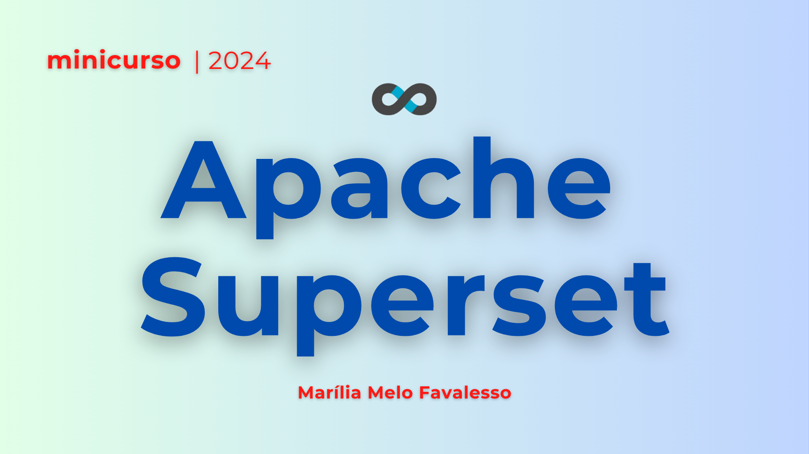
Minicurso:
Apache Superset
Interatividade open-source para impulsionar seu projeto/pesquisa
1 de mai. de 2024
tags
PT-BR
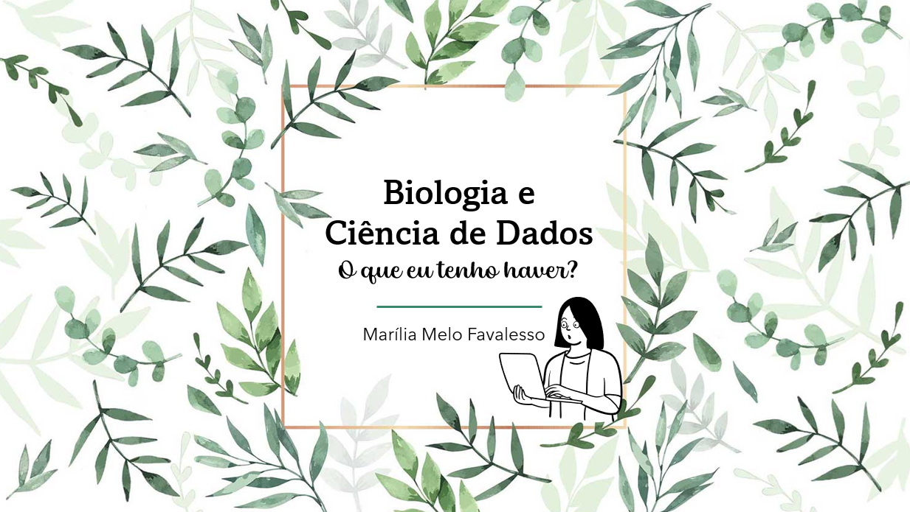
Biologia e Ciência de Dados
Palestrei na Semana Acadêmica das Ciências Biológicas da UFPR
26 de mai. de 2023
tags
Git e GitHub sem programação
Curso que ministrei na 2ª edição do Hacktoberfest GECD e GDG Foz do Iguaçu
2 de out. de 2021
tags
PT-BR
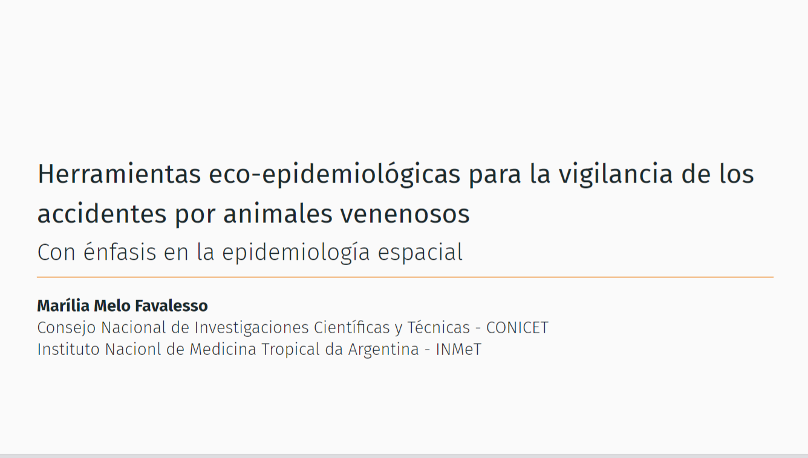
Herramientas eco-epidemiológicas para la vigilancia de los envenenamientos
Con énfasis en la epidemiología espacial
11 de mai. de 2021
tags
ES-AR
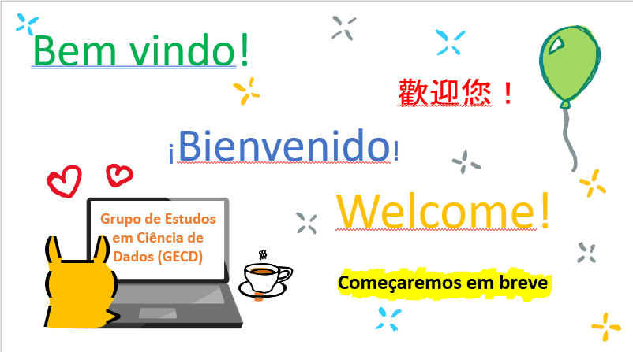
Estatística Descritiva
Curso ministrado para o GECD - Foz do Iguaçu
17 de abr. de 2021
tags
PT-BR
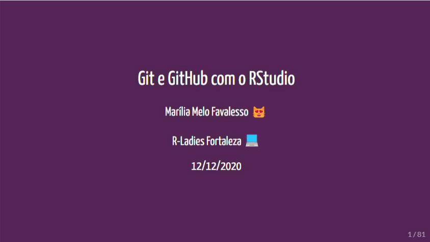
Git e GitHub no RStudio
Curso ministrado para o maravilhoso grupo do R-ladies Fortaleza
12 de dez. de 2020
tags
PT-BR
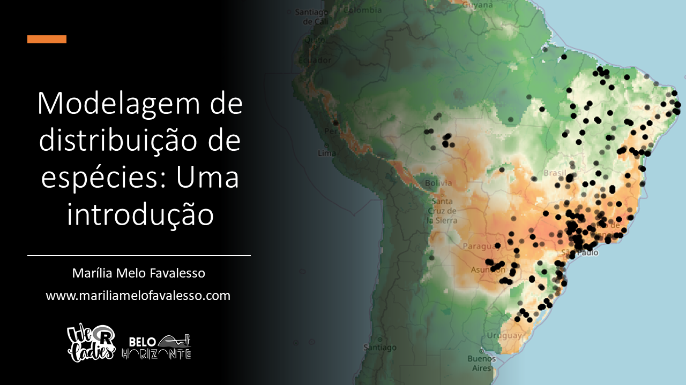
Modelos de distribuição de espécies no R
Curso ministrado no evento ‘Dados da Ecologia e Meio Ambiente Aplicados ao R’
31 de out. de 2020
tags
PT-BR
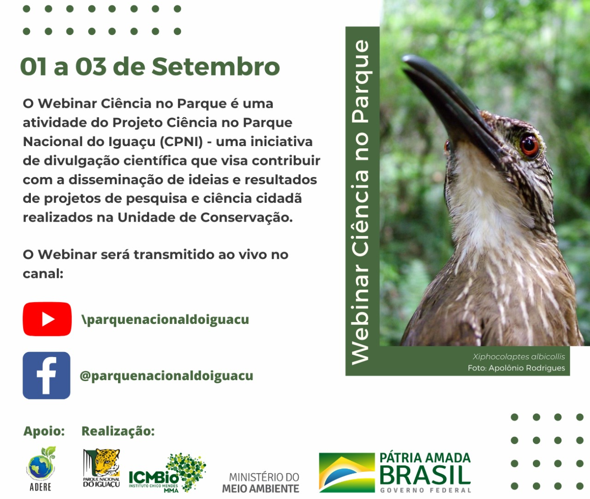
I Webinar Ciência no Parque
Divulgação dos projetos desenvolvidos no Parque Nacional do Iguaçu
3 de set. de 2020
tags
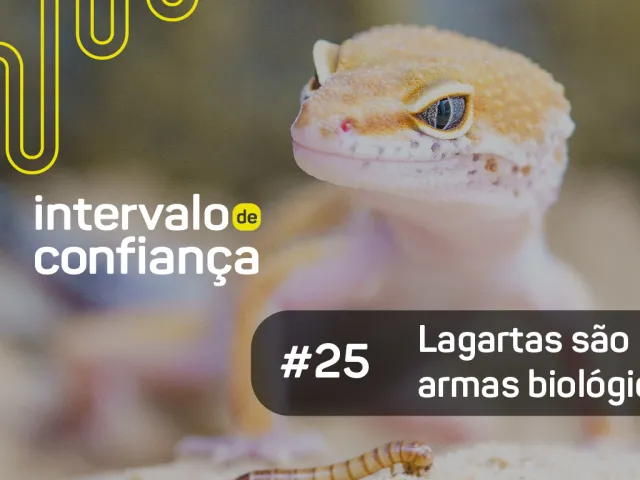
Lagartas são armas biologicas?
Um papo sobre bioestatística no podcast ‘Intervalo de Confiança’
3 de set. de 2020
tags
PT-BR
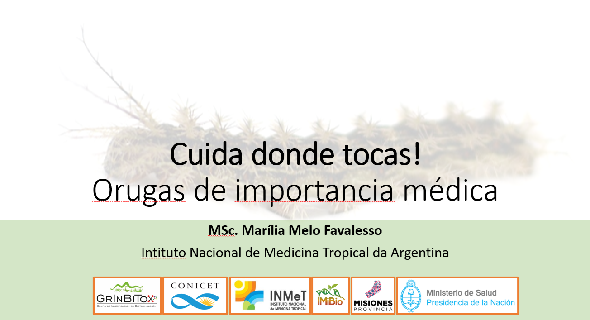
Orugas de importancia médica
Ciencia ciudadana en Misiones - Argentina
27 de jun. de 2019
tags
ES-AR
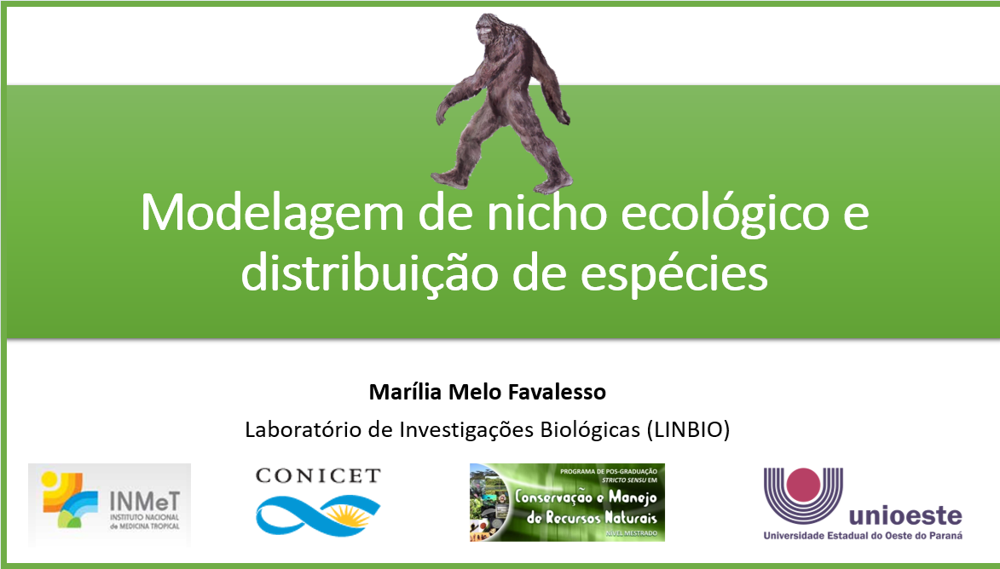
Modelagem de nicho ecológico e distribuição de espécies
Curso ministrado na XXV SACB - UNIOESTE
28 de ago. de 2017
tags
PT-BR
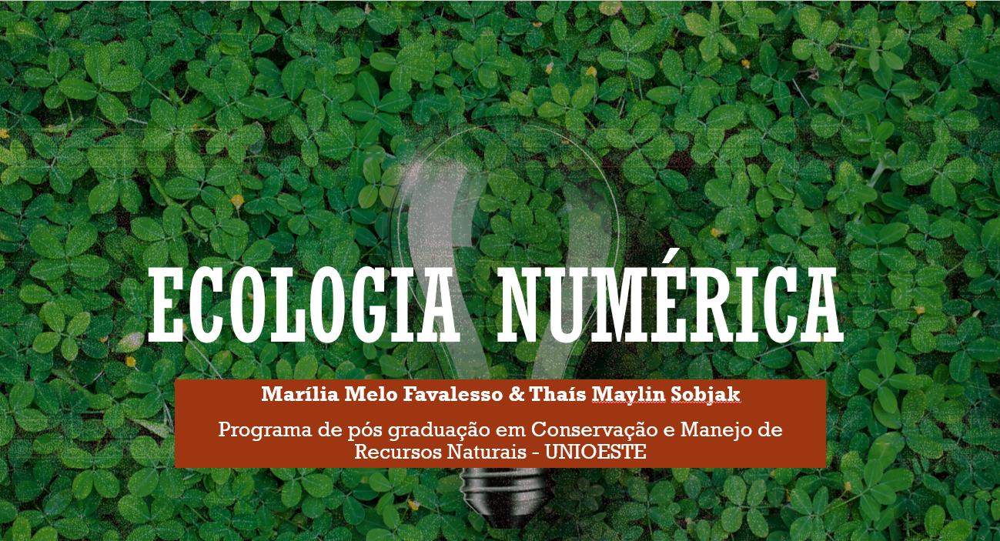
Minicurso de Ecologia Numérica
PCA, Cluster e Índices de Diversidade
21 de nov. de 2016
tags
PT-BR
Nenhum item correspondente